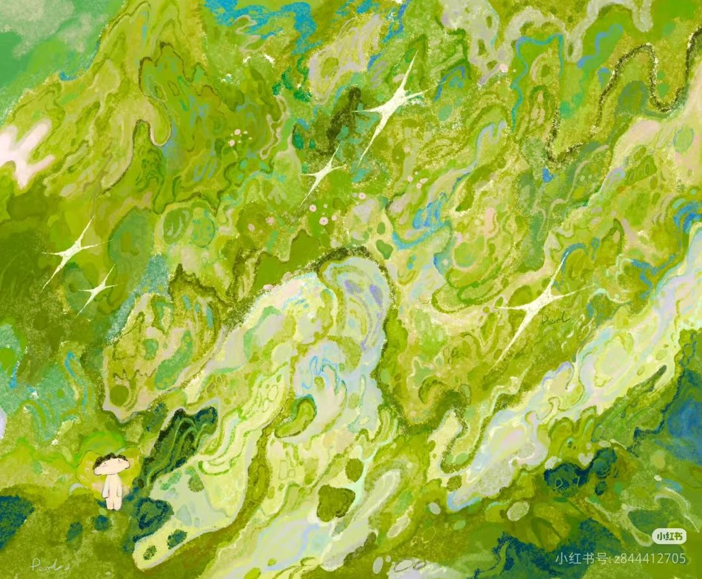
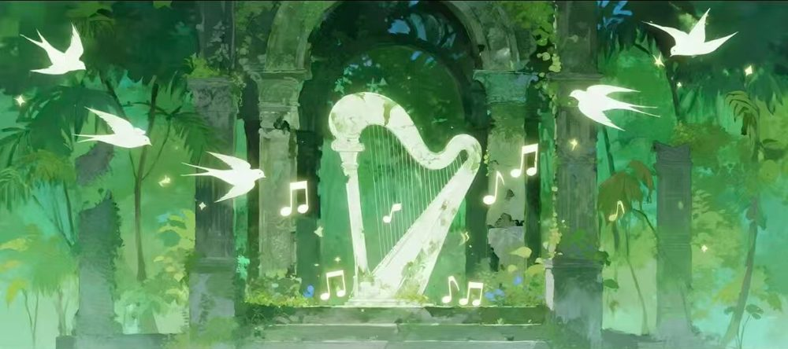
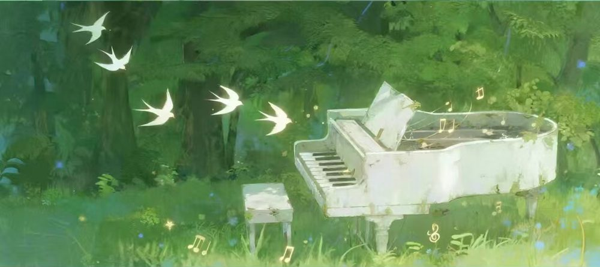
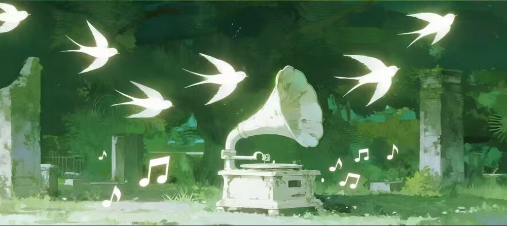
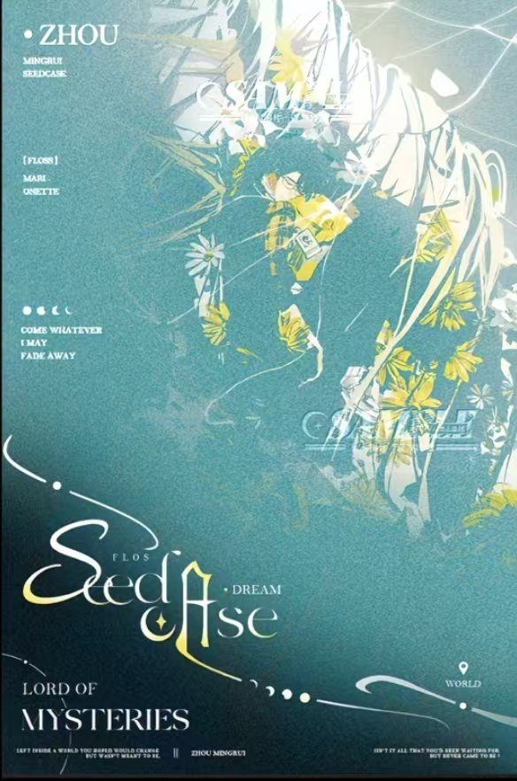

拾 光 小 筑 · 座 隅 已 开
迟留故时月
桂影来座隅
「在淡淡的秋季
我多想穿过枯死的篱墙 走向你」
—— 开篇 · 子衿
入 座
卷一 关于我 // 月的音介
正在接入 月的音介
桂影落座的时候，月色正浓。
我在檐下留了一盏灯，等一个愿意慢慢说话的人。

// 档案
名讳时月
年岁18 H
性情INFP · 高共情能力
状态在线 · 座隅已开放
桂影相连
// 座右铭
外界的声音太杂乱
听自己的心就好
听自己的心就好
不做喧闹里的回声，只做你座隅里那一缕桂影。
卷二 树洞 // RAINY DAYS
在淡淡的秋季
我多想穿过
枯死的篱墙
走向你
我多想穿过
枯死的篱墙
走向你
- Rainy days -
树洞 · 致你的一封信
雨天的树洞常年开放。心事可以整段丢进来，也可以只有一句没头没尾的「今天有点累」——都会被接住。
信已经写好了，收件人一栏空着。等你来签收。
“…Silence and fragrance, just waiting for the predestined person to bend down to pick it.”
寂静与芬芳，只等命定之人俯身拾起 —— Lily of the valley
卷三·肆 哄睡 // 普陪 · 打卡
座隅的营业项目
月亮值班中 · 以下服务均可从文档预约。
叁 · 夜谈
MOONLIGHT
哄睡LULLABY
夜谈频道 · 低音量电台模式。故事、白噪音、或者什么都不说地陪着——把今天轻轻地合上。
肆 · 日常
DAILY
普陪 / 打卡DAILY CARE · SKY
陪你闲话日常，也陪你在光遇里跑图打卡——云野的风、雨林的雨、霞谷的日落，走过的每一处风景都替你记着。

竖琴 · 哄睡叁 · 夜谈 LULLABY

钢琴 · 普陪 / 打卡肆 · 日常 · 光遇景点

留声机 · 树洞信箱「叩响心门」· RAINY DAYS↗
卷四 梦境一隅 // FLOS DREAM

拾一枚
梦境样本
风把梦境吹成种子，落进浅绿的旷野——
有些会开花，有些化作星子，
等着某个俯身拾起它的人。
“Come whatever, I may fade away.”
纵然消逝，亦随它去 —— SeedCase · FLOS DREAM
END 桂影来座隅
迟留故时月
桂影来座隅
月亮迟留，桂影入座。
下一个座位的名字，留给你。
// END OF SIGNAL · 子衿 * 迟留故时月 桂影来座隅